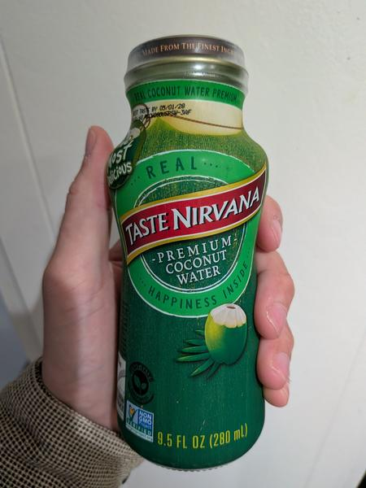

July 2025 · 9.5 fl oz (280 mL) · Still · Pasteurized · No Added Sugar · Not Organic · Nam Hom
This is a Nam Hom water that claims to be the most delicious on the market. According to their website, they are not organic because “Most of the farmers in Thailand are not willing to pay to get certified.” Which is interesting because I’ve paid less for better tasting organic coconut water (Trader Joe’s sells their unpasteurized, organic water for less). This is a steam sterilized product.
Pretty tasty for a shelf stable option. Sweet in a mildly candied way. Nothing floral or earthy, but not bitter either. Not a showstopper.